东鹏饮料案例是华与华在饮料行业通过“元媒体开发+超大字体画面+醒脑广告” 3 大放大术，几何级放大品牌信号能量，实现东鹏特饮强势陈列优势，高效率零损耗传播，助推产品 56 %快速增长的代表案例。2021 年 5 月，被称为“中国功能饮料第一股”的东鹏饮料正式登陆 A 股市场，上市首日股价大涨 44 %，上市 16 天正式跨入“千亿俱乐部”。在这之中，华与华又为东鹏饮料做了哪些事呢？学习本文，你将学到 3 个核心知识点：1 、元媒体开发华与华媒介环境学理论把媒介分为“元媒体”和“延伸媒体”。延伸媒体是我们需要花钱购买才能使用的媒体，元媒体则是我们自己身上的、不花钱就可以使用的媒体。
对快消品来说，元媒体就是产品包装，一个好的包装设计就是数亿元广告费，发挥出产品包装的元媒体价值是快消品牌广告创新的关键动作。2 、信号能量原理人的一切行为都是刺激信号和条件反射；刺激越强，则反射就越大。而华与华传播三大原理，把这称为信号能量原理。华与华设计的核心技术“加大加粗”就是从信号能量原理出发，放大刺激信号。而除了加粗加大，本文还会介绍到其他放大信号能量的方法。3 、超级醒脑广告华与华创意的广告叫做“醒脑广告”，而不是“洗脑广告”。洗脑广告狂轰滥炸，满地打滚，硬往消费者大脑里闯。而华与华的醒脑广告则是“卷入”，是唤醒大众的集体潜意识和大众美好情绪，自己就能传诵。醒脑广告即使它的投放量不大，但只要看过一次的人都会自发卷入，是消费者自己脑海里的“原力觉醒”。醒脑广告带来的效益不只是传播的力量、销量的增长，同时也能一举奠定品牌资产，可以说是品牌的“建国大业”。华与华咨询服务工作的起点：一企一策，寻找课题在华与华服务客户有一个原则：一企一策，一事一议。在我们看来，每一件事情都有它不同的战略重心和决胜点，每一个行业都不一样。餐饮业、快消品、互联网、房地产等，它的战略重心和决胜点是不一样的。而东鹏饮料的课题寻找更难，因为东鹏特饮本身已经十分成功，它有积累了 10 多年的品牌符号“东鹏”，有行动指令极强的广告语“累了困了 喝东鹏特饮”，多年来也一直保持压倒性的广告投入，从而让东鹏饮料稳居能量饮料领域第二的位置。我们在东鹏饮料这个企业身上就是要思考，如何在已经十分成功的东鹏特饮品牌上找到战略重心，再去创造更大的价值。
确认课题：品牌零损耗传播，实现品牌信号能量几何级放大传播效率的高低，对快消品来说是品牌的重中之重。东鹏每年销售 30 多亿产品、有数亿的广告、以及千万家终端的门店陈列投入。而这些花出去的钱中，有多少能让消费者记住东鹏特饮，有多少实实在在积累在东鹏特饮品牌资产上？如果传播效率不高，在广告上投入大量的金钱，就会造成惊人的浪费。所以说，我们真正要解决的就是品牌传播中信号能量的损耗问题。华与华说：一切传播都是符号的编码和解码。传播是进行符号的编码，再给接收者解码的过程。我们所做的一切努力就是要将品牌价值信息，以最小的传播成本实现最大的传播效果，解决编码和解码过程中信息损耗的问题。在信息传播的过程中，我们追求的是什么？是我释放一个“ 1 ”的信号，尽可能降低过程中的损耗，让顾客接收到“ 1 ”。但是，通常传达的内容与传达率是成反比的，我们想要传播“ 1 ”，但传播过去之后，可能只有“ 0 . 01 ”被受众接收了，传播过程中的损耗是巨大的。如何解决损耗的问题？认识论决定方法论，对传播的不同认识，决定了我们提高传播效率的不同方法。华与华方法追求的不仅仅是零损耗传播，让我们传达出“ 1 ”，受众完整接收到“ 1 ”，更是要让我们传达出去的“ 1 ”，让受众接收到“ 10 ”、甚至是“ 100 ”的放大传播效果。
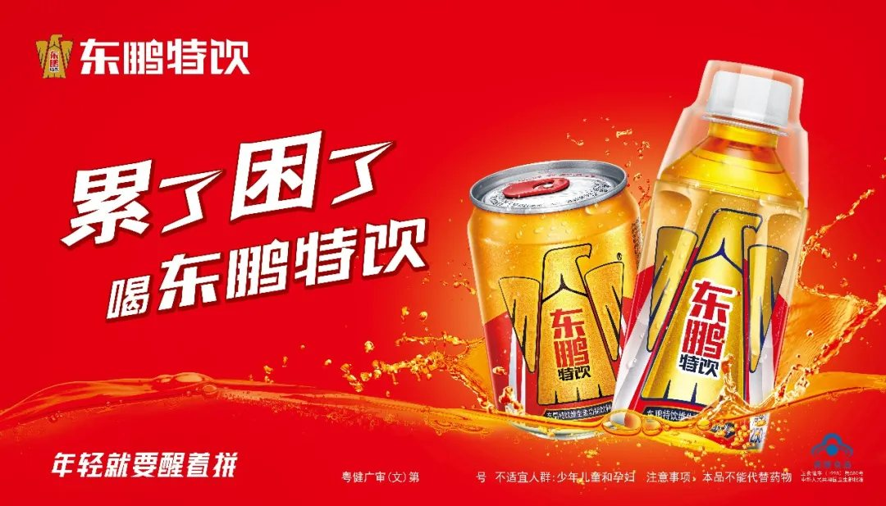
基于此，我们通过华与华放大术，创意“元媒体开发+超大字体画面+醒脑广告”实现东鹏特饮的信号能量的几何级放大，而这也是快消行业建立品牌的核心。
阶段 1
在元媒体上建立品牌，实现信号能量几何级放大
在华与华方法的媒介环境学理论中，我们把媒介分为“元媒体”和“延伸媒体”。延伸媒体是我们需要花钱购买才能使用的媒体，不管是线上还是线下，户内还是户外。比如电视、网络、机场广告牌等。而元媒体简单来说就是我们自己身上的、不花钱就可以使用的媒体。对于东鹏饮料来说，最大的元媒体就是产品包装。商品即信息，包装即媒介，一个好的包装设计，胜过 1 亿广告费。东鹏特饮每年 30 多亿支的产品，就是 30 多亿个元媒体，也就是 30 亿个广告位，并且这些包装是能够完完全全和消费者 100 %触达的！但是东鹏的广告语却只出现在广告画面、终端海报上，在产品包装上没有出现，也没有积累，这是不是就白白浪费了几十亿个不花钱的广告位？
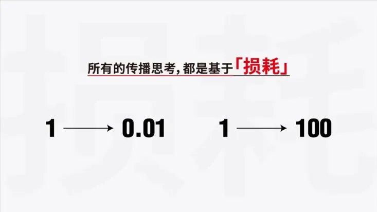
东鹏饮料原包装所以，我们第一大关键动作，对东鹏特饮的全系列产品包装进行改善升级，发挥出东鹏产品包装的元媒体价值，这也是快消品牌广告创新的关键动作。
品牌谚语的决策 始终服务于最终目的之前，东鹏特饮有两句同时使用的广告语：“累了困了 喝东鹏特饮”和“年轻就要醒着拼”。在东鹏企业的理念中，“累了困了 喝东鹏特饮”是产品广告语，而“年轻就要醒着拼”是和消费者沟通的品牌理念。华与华强调要基于最终使用场景进行创意，我们不是要一句写在新闻稿里的话，也不是要一句写在企业文化里的话。我们要的是一句行动指令，能说动消费者行动的品牌谚语，而“累了困了 喝东鹏特饮”就是这个能打动消费者最直接的品牌谚语。所以我们决定把这句话作为东鹏特饮的品牌谚语，并上到放在包装上。
字体改善上包装 不花钱的改善其次我们对“累了困了 喝东鹏特饮”字体进行重新设计，通过统一字形风格，更加适配包装，并且在不影响整体包装设计的基础放大到极致。接着我们在前后两面都放上产品话语，增加消费者与这句超级话语的接触几率。
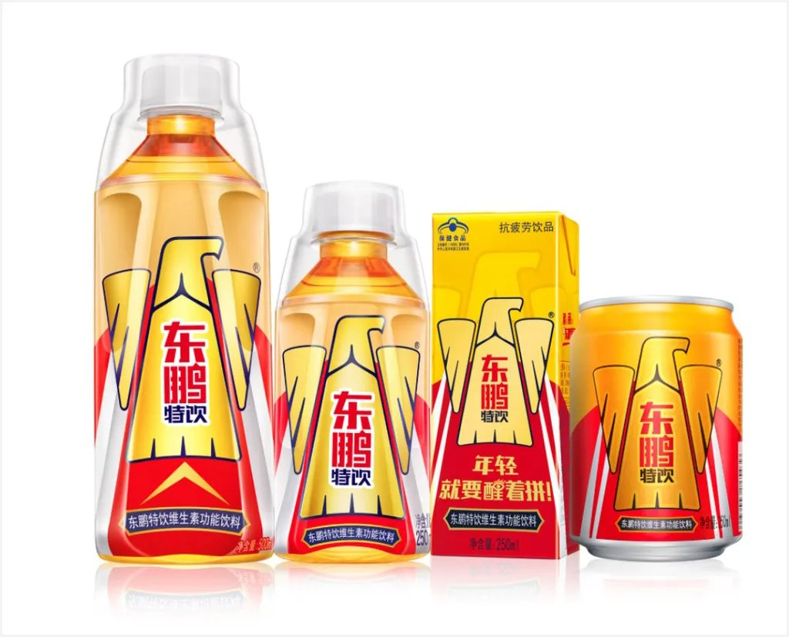
东鹏特饮包装前后对比（左前）
这样我们不花一分钱，每年就多了 30 多亿个品牌广告位，每一瓶销售出去的东鹏特饮，都是我们让消费者接触“累了困了 喝东鹏特饮”和积累我们品牌资产的元媒体广告位。这就是开发元媒体，并在元媒体上积累品牌资产的品牌信号放大术。
华与华改善后的包装
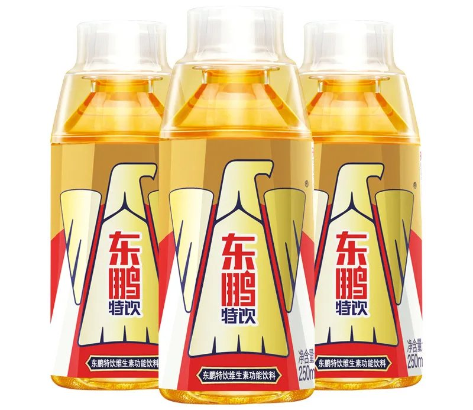
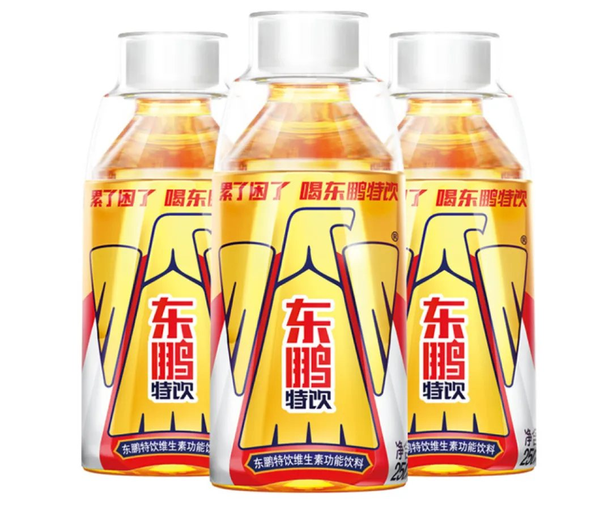
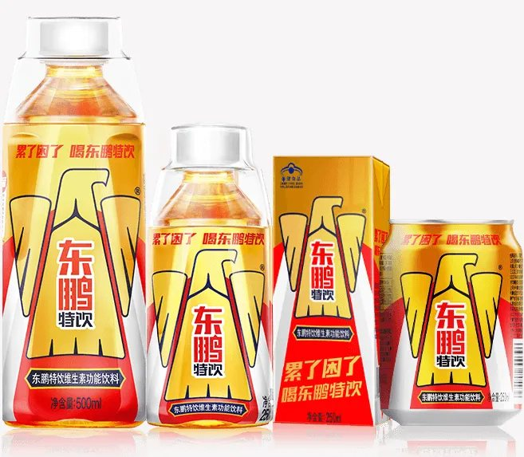
我们所有的营销，都是要把商品的信息，通过媒体，传播给人。在这个信息传递的过程中，我们需要使用延伸媒体，来增强传播的信号能量。如果你不想投入资源你也可以把商品放在那里，通过光、空气来直接展示给人看。那么，华与华认为商品本身就是元媒体，人也是元媒体。
而关键我们是要发挥这两个元媒体的作用，对于包装这个元媒体来说，是商品即信息、包装即媒体，我们要把商品包装当做元媒体开发来设计。对于人呢，关键就是要发动他的播传功能，把他转化为传播者。对于东鹏来说，“累了困了 喝东鹏特饮”就是一句比“年轻就要醒着拼”更加能打动消费者，并被消费者传播的品牌话语。那怎么样能让“累了困了 喝东鹏特饮”的播传效果更强，发挥更大的元媒体作用？
阶段 2
超大字体画面，实现品牌强势陈列优势
信号能量几何级放大华与华方法的刺激反射原理说：所有的传播都是释放出一个刺激信号,谋求顾客的一个行动反射。广告就是发信号，信号越强越有效。所以我们要解决的是，如何设计东鹏特饮的品牌主画面，让其刺激信号能量最强，以谋求消费者最大的行为反射。在创作有实物产品的广告时，我们似乎总要在产品、超级符号、超级话语等关键信息做出抉择，一个都不能委屈。那我们在创作东鹏特饮的品牌画面上，会遇到什么问题呢？

我们既想突出产品，让消费者远远看到就知道是哪个品牌；又要放大产品话语，让消费者被品牌谚语打动从而购买。如果只用常规的设计手法，很难在兼顾品牌话语和产品相互关系的同时，又让画面拥有足够的有打动力。这时，应该怎么办？普通设计手法解决不了的问题，就用华与华超级放大术实现超大字体画面！
第 1级放大：产品占 C位 品牌第一位将产品包装置于画面中心上下撑满放到最大，并用一只手从背后握住，以略仰视的角度拿产品创造视觉冲击力，增加画面的力量感，让消费者远远就能看到一瓶超大的东鹏特饮从画面中呼之欲出。
第 2级放大：透视排版法 强势视觉力我们用大大的“累了”、“困了”把画面左右两侧填满，用透视角度将“累了”、“困了”在有限的空间里放到最大。这样的透视手法，不仅仅将字体能够放到最大，而且透视的设计手法，也形成一种强制的视觉陈列效果，让人看到文字的同时又把注意力转向画面中心的产品。”最后，在右下角放上行动指令“喝东鹏特饮”，下达消费者的行动指令。
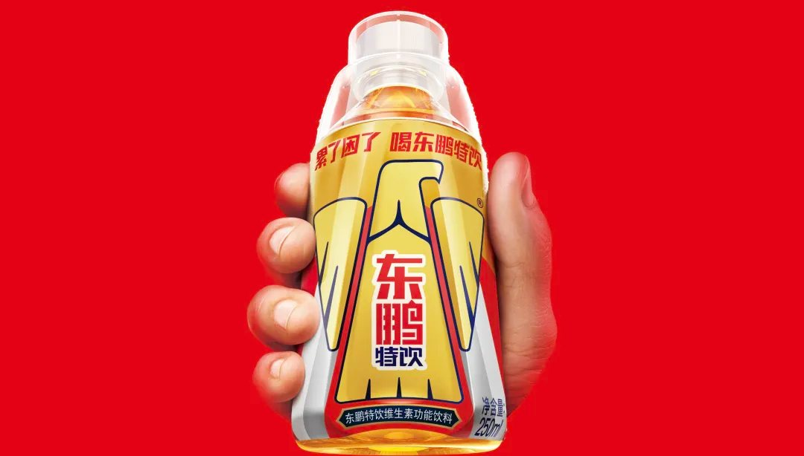
第 3级放大：饮料加水珠 食欲再放大不仅仅在视觉效果，在产品的食欲感上也要放大。我们在产品的瓶身上增加水珠，放大东鹏特饮带来的清爽和解渴感。
华与华超级放大术就是通过独特的几何排版结构把我们最有卖货价值的刺激信号放大，形成强制的画面强制性，给消费者最强的刺激反射。刺激反射越强，卖得就越多。这样的超级画面，让人不困都看困了，马上就想来一瓶东鹏特饮。
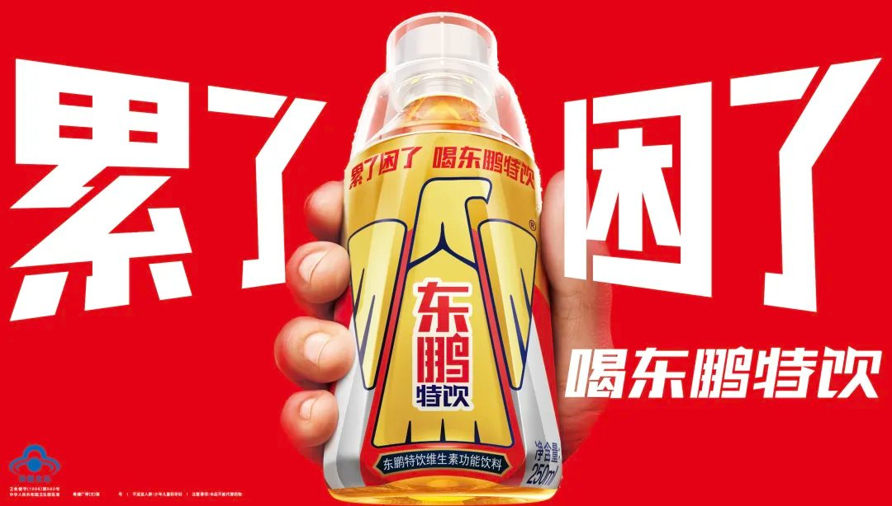
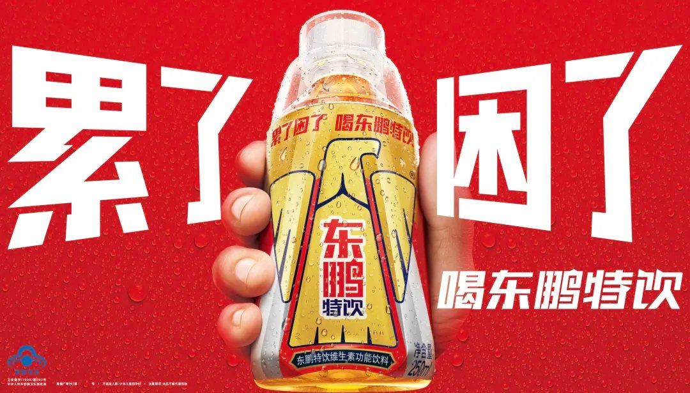
东鹏特饮广告主画面前后对比（左前）
独特的超级画面形成了东鹏特饮的品牌视觉符号，统领全国广告牌、公交、候车厅、墙体与地铁包站等品牌传播工程。
高炮广告


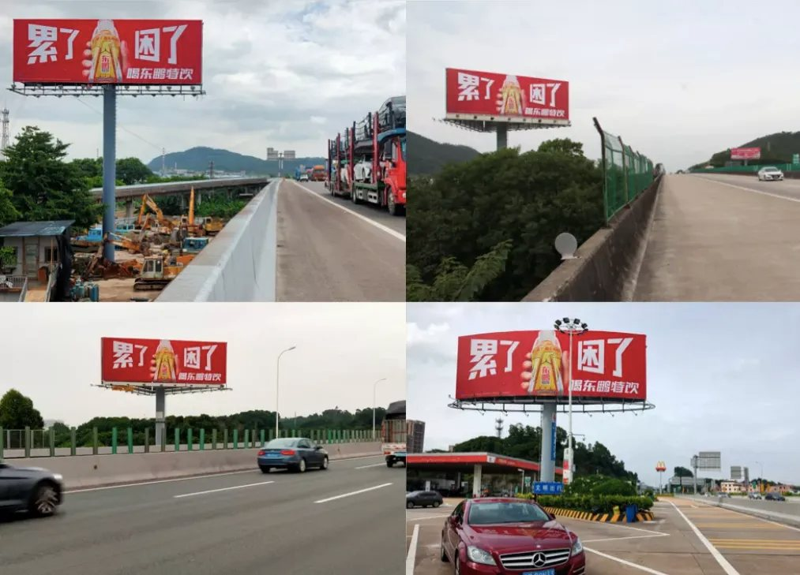
地铁包站广告
独特割箱陈列设计 终端放大超大画面在东鹏的优势渠道传统渠道中，商户经常将饮料一箱一箱打堆陈列售卖，并在顶部增加割箱，增加陈列位置，常规的割箱设计是把箱子打开好，再在顶部放一个品牌插卡，这也是产品在终端最重要的广告位之一。但一个插卡的制作成本在 2 - 4 元左右，而且容易掉落，还很难规范使用。华与华说所有事是一件事，所以，在东鹏特饮的外箱设计中，我们把割箱的陈列方式一起考虑进去。在画面上，继续沿用超级画面的设计，并沿着画面核心对割箱线区域进行规划，让外箱一推就能成为一个超级广告位，这样不仅节省了终端人员的维护成本，又增大的终端的陈列优势，在消费者脑海中重复建立“累了困了 喝东鹏特饮”的记忆。

这也是元媒体开发，不花钱就实现的品牌信号放大的核心法则。
阶段 3
超级醒脑广告：品牌寄生实现品牌自动传播
华与华的广告叫做“醒脑广告”， 不是“洗脑广告”。洗脑广告狂轰滥炸，满地打滚，硬往消费者的大脑里闯。而华与华的醒脑广告就像我们创造符号和话语一样，都是唤醒大众的集体潜意识和大众美好情绪，所以自己就能传诵。
醒脑广告即使它的投放量不大，但看过一次的人都会感觉是被“轰炸”过了，这就是消费者自己脑海里的“原力觉醒”。
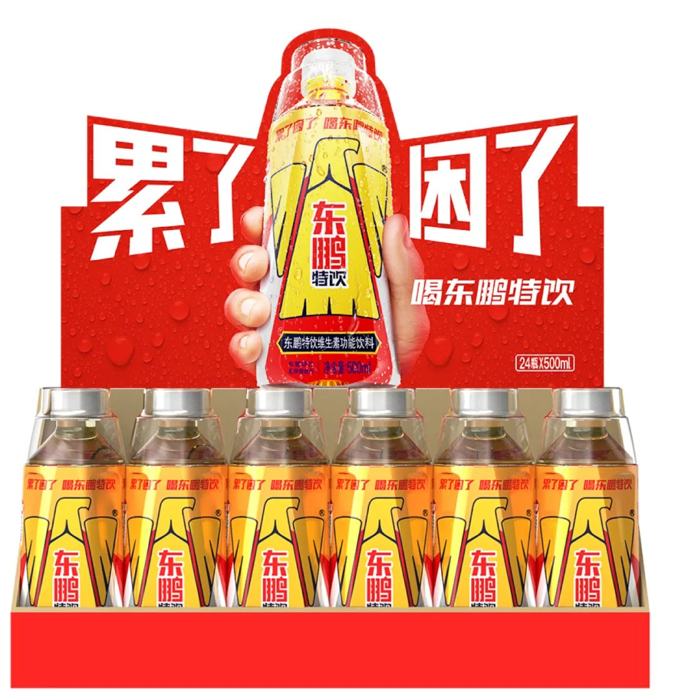
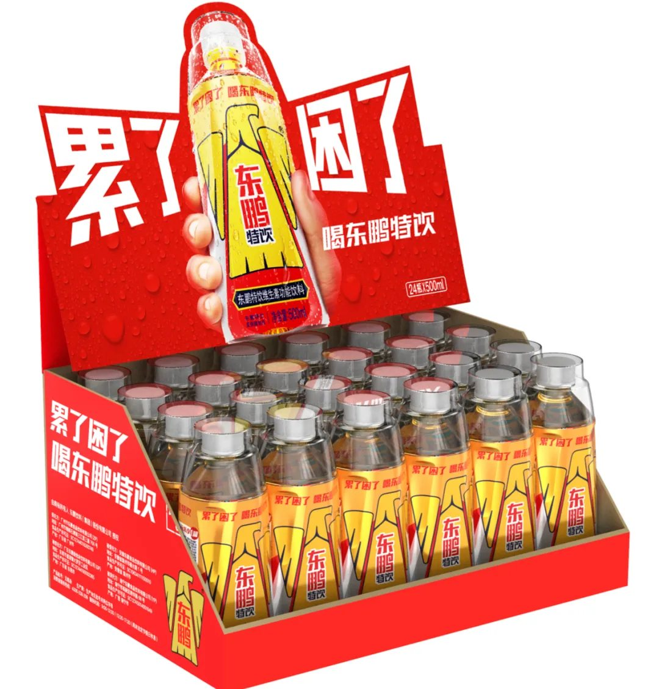
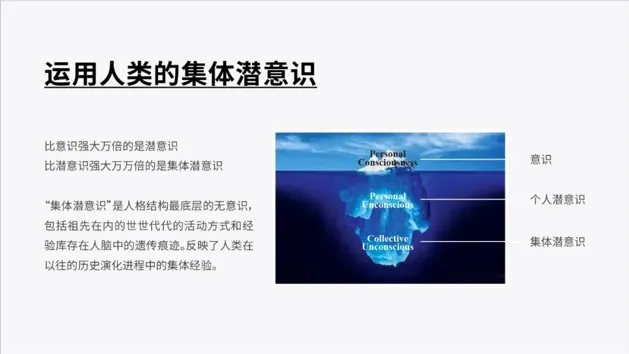
田七的创意，也是华与华的重要方法论，叫“品牌寄生”，就是给品牌找寄主。田七品牌寄生在哪里呢？就寄生在大家平时合影照相的场景，品牌寄生是品牌植入的升级。我们常常把品牌植入到电影、电视剧或者电视节目里，但是，如果能植入消费者的生活场景，让消费者帮你去传颂，那就是不用掏赞助费的免费传播。而最近火遍网络的蜜雪冰城“你爱我 我爱你 蜜雪冰城甜蜜蜜”，也是成功让消费者自发卷入为蜜雪冰城做了一波免费传播。
寄生的文化母体的生命力有多强，寄生在其上的品牌仪式就有多强在 东 鹏 特 饮 广 告 上 ， 我 们 将 东 鹏 品 牌 寄 生 到 歌 曲 《 Ole Ole We Are TheChampion 》上。其最早的旋律可追溯到 1985 年，比利时汉斯寇·司德音乐公司为比利时足球冠军“安德莱赫特”写一首名叫“安德莱赫特冠军”的歌曲。这首歌风靡世界至今已经有 33 年的历史，可以说是一首全世界人民都知道的文化母体。我们围绕广告语“累了困了 喝东鹏特饮”，将歌词改编成“我累我累我累”，与原曲歌词“ ole ole ole ”形成巧妙的融合，实现品牌寄生。
阶段 4
继承品牌资产，打响礼品大战
在东鹏特饮传播工程铺天盖地全面亮相的同时，我们对东鹏特饮礼品市场也利用符号和话语的技术，进行了品牌信号能量的放大。国内礼品市场群雄逐鹿，各种产品品类和品牌琳琅满目，竞争激烈。对于东鹏特饮来说，每年的礼品市场是企业的一大全新增长点。作为礼品市场的新进入者，东鹏特饮也在持续发力抢占市场。
2018 年，东鹏切入礼品市场，以金罐为核心产品，打造“元宝鹏”的品牌符号和“中国红 能量鹏 带上东鹏送亲朋”的品牌话语起手势，建立东鹏在礼品市场的品牌资产。面对礼品市场白热化竞争，我们需要对东鹏礼品市场的话语和符号进行改善，放大品牌信号能量，提升传播效率，以谋求消费者在选购礼品时做出更快的决策放射行动。礼品市场所在的节日，本质上是一个巨大的文化母体。我们要通过改造并占领特定的文化母体中的词语符号和仪式，实现品牌寄生，来让购买必然发生。成为母体，壮大母体，我们要找到符号和话语进行私有化改造，让东鹏特饮成为母体中不可替代的母体道具。而我们就是要在国人送礼场景文化母体中，寻找信号能量最强的符号和话语，对品牌进行再创意。
继承品牌资产 放大信号能量元宝鹏是对东鹏特饮在礼品市场对超级符号“鹏”形象的延伸创意。我们发现“元宝鹏”符号在近两年的积累中已得到消费者认同，并形成一定品牌认知的符号；同时元宝也代表了中国人民对财富的期待，有代表美好价值的文化原力。因此，我们遵循保护品牌资产的原则，对元宝鹏符号进行保留并放大。将其作为礼品市场最核心的符号形象，从产品包装到终端打堆物料设计，都用这一个元宝鹏进行统领。
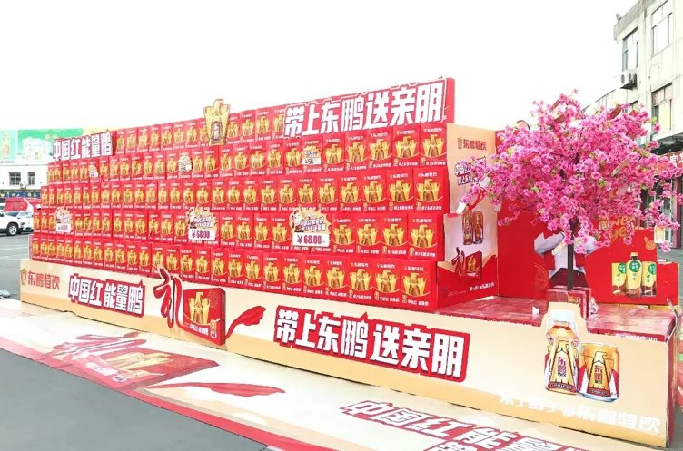
寄生文化母体 创造购买理由我们说，广告语不是我们创造一句话告诉消费者，而是创造一句话让消费者说。就是要实现以一传十，甚至以一传百的播传效果。所以我们要创造让东鹏在这个礼品市场，一眼就能打动消费者购买，并且会用，会帮我们自动传播的品牌谚语。我们的符号是“元宝鹏”，而在中国人的文化中，求财运又是中国人民传承千年的习俗，每年正月初四也是接财神日。所以我们把东鹏特饮寄生在“财运”这一文化母体上，创作出“送东鹏，财运爆棚”这一广告语，并且与元宝鹏这一符号的母体价值交相呼应。
广告的底层逻辑是修辞 “送东鹏，财运爆棚”，就是通过简单的字词、有节奏的押韵使人产生愉悦，降低消费者的心理防线。我们就让“送东鹏，财运爆棚”来赞美消费者，让消费者用这句话走亲访友，把美好的祝福和东鹏特饮带入千万百姓家。
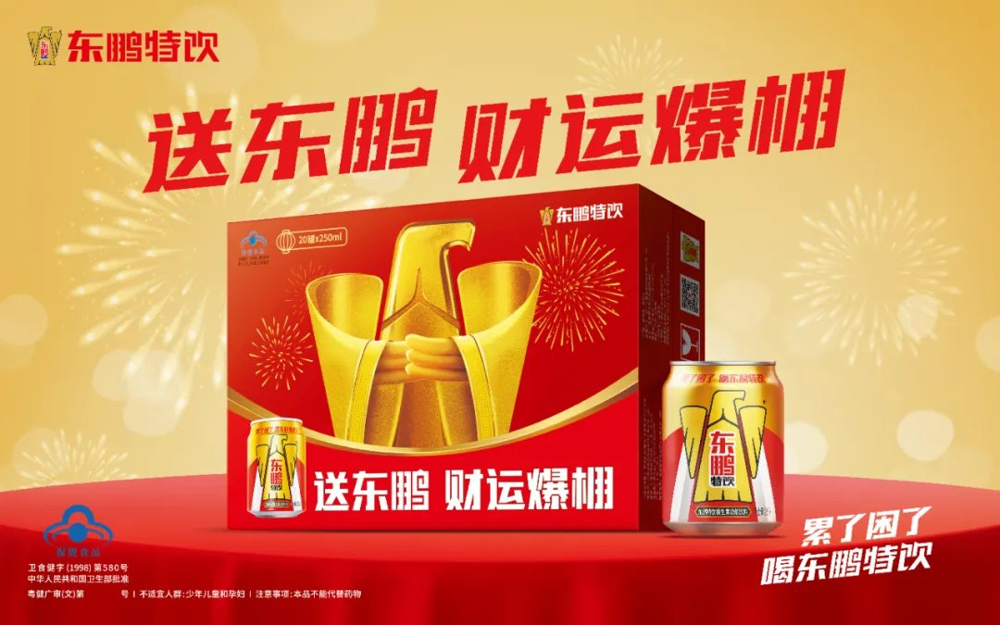
阶段 5
开发银边产品，释放边际效益
产品结构就是企业战略路线图华与华说：“产品结构就是企业战略路线图。”所以在华与华方法中，我们用中国人的战略游戏——围棋，将企业战略路线可视化。我们把企业战略路线图称为棋局上的金角、银边、草肚皮。1 ）金角是根据地，是核心业务，是竞争壁垒；2 ）银边是围绕一个核心业务、核心产品，建立起来的一条产品线，一个业务组合；
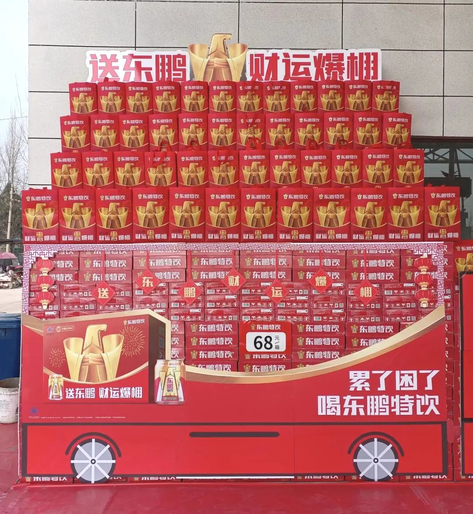
3 ）整个棋盘是我们定义的一个品类市场，而草肚皮是我们的品牌势能最终能覆盖的业务范围。我们建立起金角银边就能够在整个市场获得压倒性优势和实现全品类覆盖。对于企业的银边产品，它的作用是释放品牌边际效益。在巩固了东鹏饮料在能量饮料领域的地位，我们为东鹏开发出银边产品：第二款能量饮料——东鹏加気。
首先，在产品命名上，我们回到本质，继承东鹏特饮产品命名结构，并放大产品含气的独特购买理由，命名为“东鹏加気”。同时，通过放大加汽产品命名及戏剧性，寄生产品使用场景，创作出“东鹏加気、加油打气”这一品牌谚语，让产品成为加油打气的仪式道具。
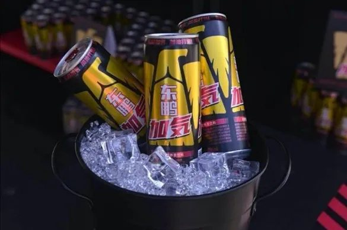
在包装设计上，除了继承东鹏特饮品牌资产把鹏放大外，更重要的是首创三面连鹏的设计：将鹏的翅膀叠加使用，这样在一个瓶身上连续创造 3 个正面，将原先只能放一个正面的罐体产品包装，多创造出两个面来使用，传播效率放大 3 倍，同时形成品牌符号，应用在各个海报画面中。而在东鹏加気主画面的设计上，我们更是将连鹏的应用放大到极致，将罐体设计与连鹏画面融合，形成极强的视觉刺激，形成东鹏加気的超级花边。
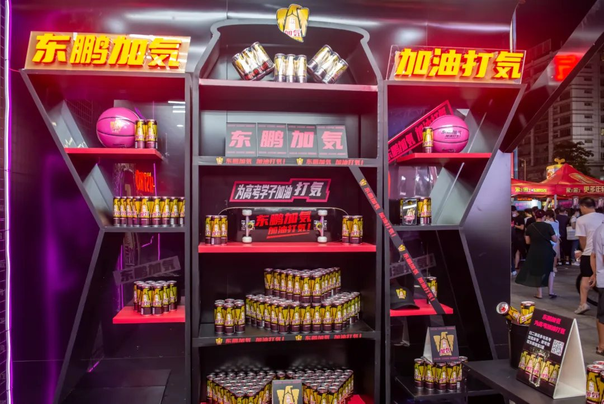
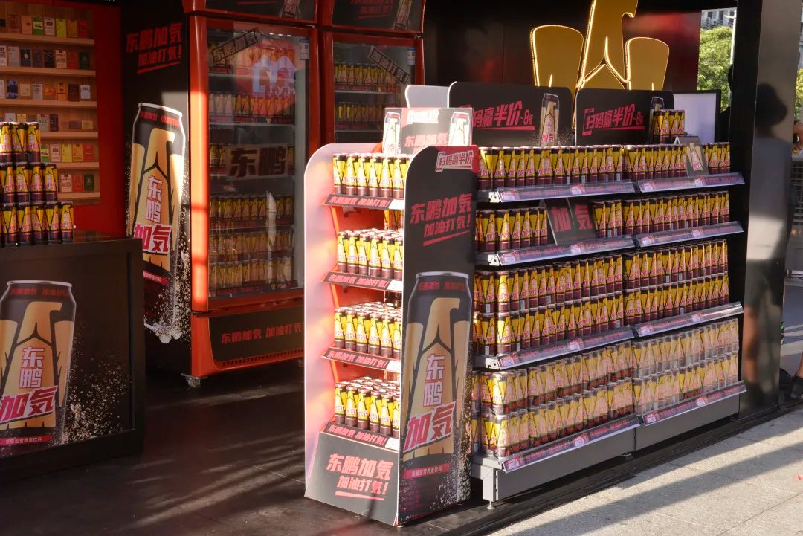
2020 年 6 月，东鹏推出战略级新品东鹏加気，凭借劲爽的气泡口感和全新包装，产品放上货架就开卖，成为能量饮料市场的又一超级新星。本文总结东鹏饮料案例是华与华在饮料行业通过“元媒体开发+超级画面+醒脑广告” 3 大超级放大术，几何级放大品牌信号能量的代表案例。以解决品牌传播中信号能量损耗问题为课题，通过超级放大术，一举提高品牌传播效率，帮助东鹏特饮建立强势的陈列优势，快速积累消费品牌认知，助推产品 56 %快速增长！所以我们总结，华与华和东鹏饮料合作 2 年，做了 5 大关键动作：第一，元媒体开发，在元媒体上建立品牌，实现信号能量几何级放大；第二，创造超大字体画面，实现品牌强势陈列优势，统领品牌传播工程；第三，打造超级醒脑广告，卷入消费者，实现品牌自动传播；第四，创意礼品市场符号话语，加速品牌开拓礼品市场；第五，开发“东鹏加気”品牌银边产品，释放品牌边际效益。
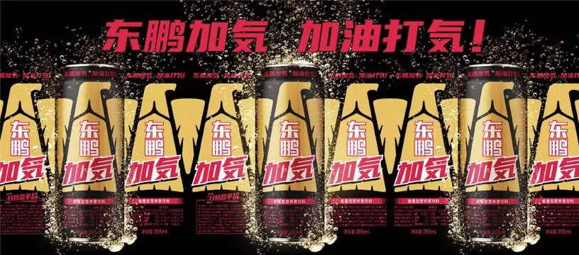